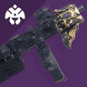
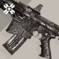

Deep Stone Crypt
Equipment recommendations. They are not absolute and only serve a purpose of giving you a general guess about what you might want in every encounter.
1. Bray Security
OVERLOAD CHAMPIONS
Close combat distances
Small and medium enemies
Don't forget to adjust your gear to include anti-overload tools. Depending on available anti-champ mods, you might want to go for other weapon types


Primary: SMGs / Auto rifles
Primary weapons to deal with groups of dregs and shanks
Special: Bastion / GLs / Fusions
Bastion deals incredible amount of damage against security mechanisms, OR choose classic special weapons to destroy champions, captains and servitors faster
Heavy: Xenophage / GLs
Use Xenophage or Heavy Grenade Launchers (auto-loading holster is your best bet) to destroy Bray Security mechanisms precisely and quickly
2. Atrax
Mid and long combat distances
Small and medium enemies
Extremely small boss DPS window
Primary: Auto Rifles / Scout Rifles
Primary weapons to deal with sniper shanks and groups of dregs/vandals
Special: GLs / Snipers
Use grenade launchers or snipers to destroy annoying sniper shanks on another side of the map
Heavy: The Lament / Parasite / Rockets
The Lament is your best bet, but Parasite or a RL will help you avoid some danger
3. Descent
OVERLOAD CHAMPIONS
Close combat distances
Small and medium enemies

Primary: Khvostov 7G-02 / SMGs
Primary weapons to kill all those dregs
Special: Witherhoard / other GLs
SPECIAL WEAPONS TO KILL ALL THOSE DREGS
Heavy: Rockets / Swords
HEaVy WEapONS tO KiLl aLl tHOSE DREgS
4. The Abomination
Close and medium combat distances
Small and medium enemies
Primary: SMGs / Auto rifles
Primary weapons for clearing adds
Special: Sniper Rifles
Snipers can be used for raid mechanics and add to boss DPS
Heavy: Rockets
For Boss DPS